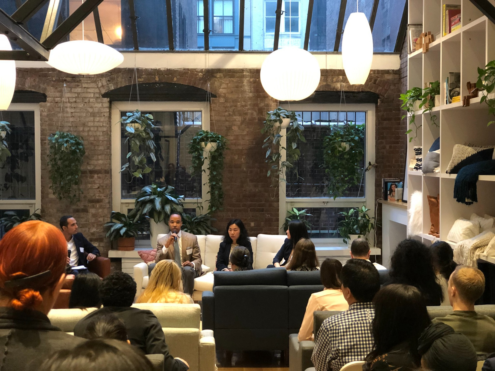
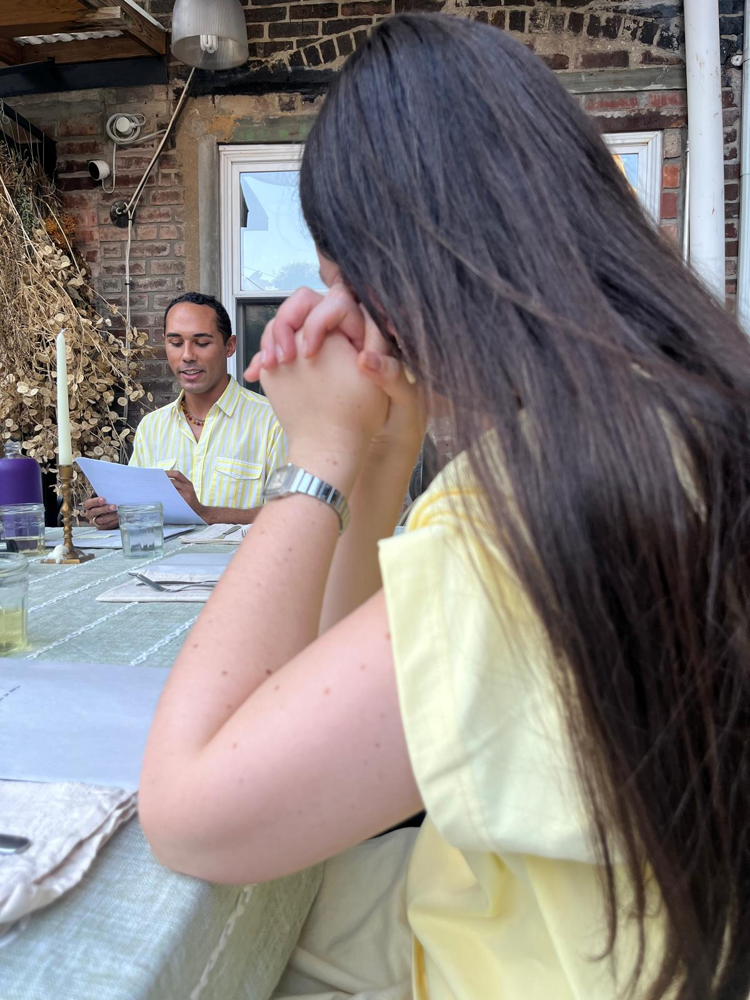
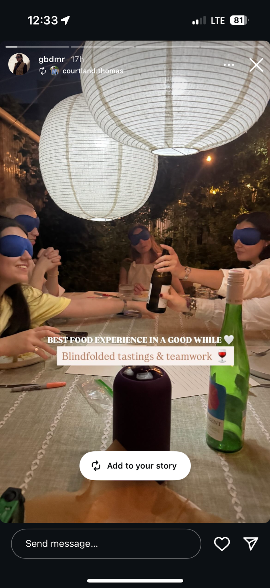

Events
For eight years, I helped build Columbia Venture Community, a global community of 6,000+ founders, operators, investors, and angels, which culminated in a 2-year tenure as Global President. Over the eight years, I worked with and led a network of 80+ volunteers to produce and host more than 200 events, and grow two startup accelerators.
My work spans intimate dinners, founder conversations, investor gatherings, salons, community programming, and larger-scale experiences designed to bring ambitious people into meaningful contact with one another.
Event strategy · Programming · Community building · Founder & investor events · Salons · Dinners · Experiential concepts


